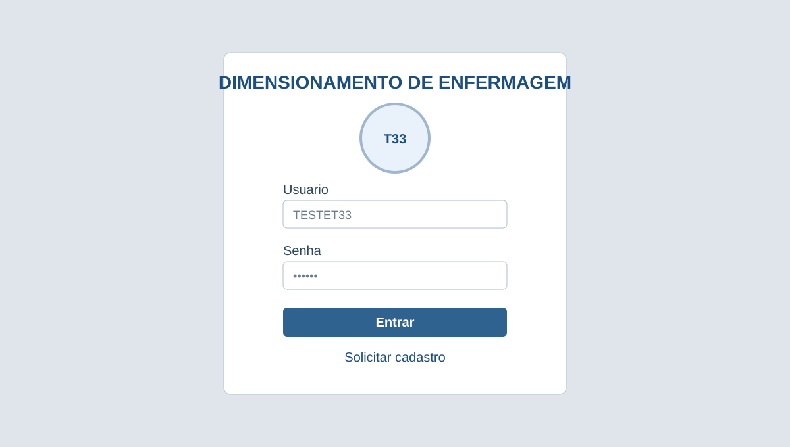
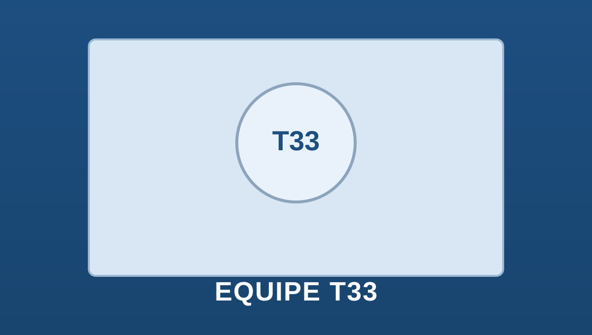
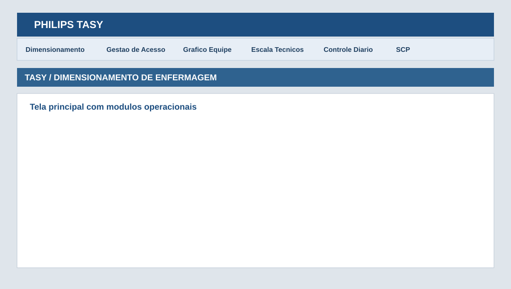
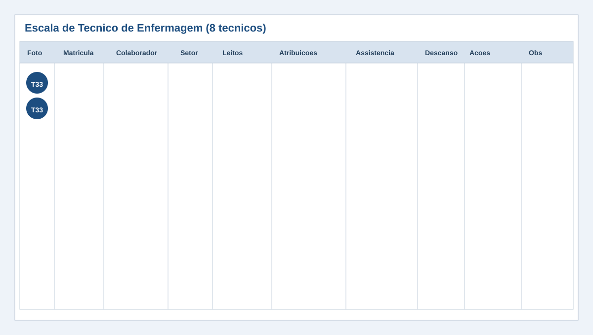
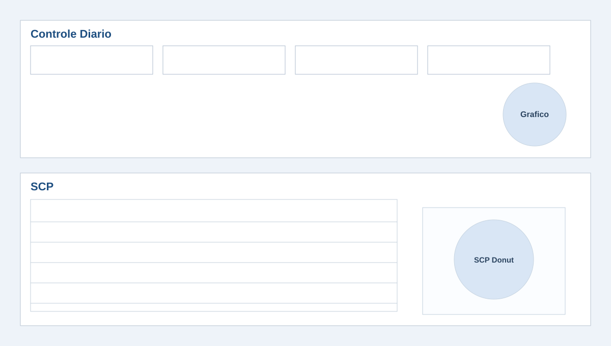

Manual do Usuario (com Imagens)
Sistema: Dimensionamento de Enfermagem TASY
Usuario operacional padrao: TESTET33 | Senha 123456
URL: https://equipet33.onrender.com/login.html
Sequencia de Acesso
Passo 1 - Tela de Login
- Abra o link do sistema no navegador (PC ou celular).
- Digite
TESTET33 e a senha.
- Clique em Entrar.

Imagem 1 - Acesso inicial no login.
Passo 2 - Tela de Abertura (Splash)
A tela de abertura aparece por 3 segundos e segue automaticamente para o sistema.

Imagem 2 - Splash de abertura do sistema.
Passo 3 - Menu Principal do Sistema
Use os modulos: Dimensionamento, Grafico Equipe, Escala de Tecnico de Enfermagem, Controle Diario e SCP.

Imagem 3 - Barra de menu e navegacao dos modulos.
Passo 4 - Escala de Tecnico de Enfermagem
- Clique em Adicionar tecnico para incluir as linhas da escala.
- Preencha nome, setor, leitos e assistencia.
- Use os botoes Confirmar / Reiniciar / Remover.

Imagem 4 - Escala de tecnico de enfermagem.
Passo 5 - Controle Diario e SCP
- Preencha altas, banhos, leitos disponiveis e procedimentos.
- Atualize SCP para calcular a soma de horas assistenciais.

Imagem 5 - Controle Diario e SCP.
Versao: 1.2 (com imagens - 02/03/2026)